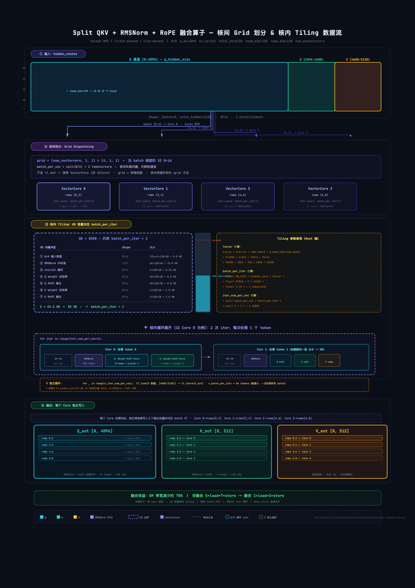

POSTS
Split QKV + RMSNorm + RoPE 融合算子
By ZhongsJie
- 4 minutes read - 1531 words源代码:
vllm-ascend/vllm_ascend/ops/triton/linearnorm/split_qkv_rmsnorm_rope.py
背景#
问题：内存墙#
LLM 推理（尤其是 decode 阶段）是典型的 memory-bound 场景。每一次算子调用都是一次「从 Global Memory 搬数据到片上 → 计算 → 搬回 Global Memory」的循环。如果不融合，Split QKV → RMSNorm → RoPE 这三个步骤各自独立执行：
非融合流程:
hidden_states ──[load]──> Split Q,K,V ──[store]──> q_in, k_in, v_in
q_in ──[load]──> RMSNorm ──[store]──> q_normed
k_in ──[load]──> RMSNorm ──[store]──> k_normed
q_normed ──[load]──> RoPE ──[store]──> q_out
k_normed ──[load]──> RoPE ──[store]──> k_out
每一次 load/store 都是一次 GM ↔ UB 的数据搬运。数据在总线上反复进出，但实际的计算量（几个乘加 + 一个开方）极小——这就是 memory-bandwidth bottleneck。
融合的收益#
融合流程:
hidden_states ──[load one time]──>
在 UB 内依次完成: Split → RMSNorm → Weight → RoPE
──[store one time]──> q_out, k_out
v_in ──[copy]──> v_out
数据只进出一次 GM，中间所有计算都在片上 UB 完成。把 memory-bound 问题部分转化为 compute-bound，大幅降低延迟。
在 NPU 上，一次 GM 访问的延迟通常是 UB 访问的数百倍。融合算子省掉的中间 store/load 往往是最大的性能来源，而非计算本身的加速。
内存层次与关键概念#
Triton-Ascend 相关内容请参阅 Triton-Ascend 笔记。
| 概念 | 全称 | 容量 | 用途 |
|---|---|---|---|
| GM | Global Memory | GB 级 | 存储输入/输出/参数，所有 Core 共享，访问延迟高 |
| UB | Unified Buffer | 192KB (A2/A3) | Vector Core 独占的片上 SRAM，延迟极低 |
| L1 Buffer | — | ~1MB (A2 512KB) | Cube Core 独占，用于矩阵乘法数据 |
| VectorCore | 向量核心 | per AI Core ×2 | 执行逐元素运算、归约、激活函数 |
| AICore | AI 核心 | — | 硬件调度最小单元，含 1 Cube + 2 Vector |
UB 是 Vector 核的片上存储，所有计算都在 UB 中进行。数据流为：
Global Memory (GM) → [tl.load] → UB → [Vector 计算] → UB → [tl.store] → GM
| 芯片型号 | UB 容量 | 可用上限 (Double Buffering) | 建议使用量 |
|---|---|---|---|
| 910B | 192 KB | 96 KB | ~85 KB |
Triton-Ascend 编程关键约束#
ascend/agent-skills 中对 Triton 编程存在一些约束
- Mask 必加：Ascend 对越界访问零容错。所有
tl.load/tl.store必须带mask参数 - 归约升 FP32：FP16/BF16 的 sum/mean 归约前必须
.to(tl.float32)，否则精度灾难 - Grid = VectorCore 数：不含
tl.dot的逐元素 kernel，grid 应设为物理 VectorCore 数量（本代码正是如此） - 单 pass 原则：数据加载一次到 UB，在 UB 内完成全部计算后写回——避归约类算子的双 pass 反模式（一次 load 算统计量、二次 load 做归一化）
- 循环内禁分支：Triton 将 if 分支编译为 masked 操作，循环内修改变量会导致灾难性性能下降
- 连续访存优先：连续内存访问才能触发 DMA 引擎大块传输，非连续 stride 访问会把一次 load 拆成数百条小指令
归一化：LayerNorm vs RMSNorm#
标准 LayerNorm#
标准 LayerNorm 对一个向量同时做去均值 (centering) 和缩放 (scaling)：
$$\text{LayerNorm}(x) = \frac{x - \mu}{\sqrt{\sigma^2 + \epsilon}} \odot \gamma + \beta ,\quad \mu = \frac{1}{H}\sum x_i ,\quad \sigma^2 = \frac{1}{H}\sum(x_i - \mu)^2$$- $\mathbf{x} \in \mathbb{R}^{H}$ — 单 token 的隐状态向量
- $\mu, \sigma^{2} \in \mathbb{R}$ — 在
H维上算的均值和方差 - $\epsilon$ — 防除零小常数（通常
10^{-5}） - $\boldsymbol{\gamma}, \boldsymbol{\beta} \in \mathbb{R}^{H}$ — 可学习的 scale / shift
- $\odot$ — 逐元素乘
RMSNorm#
RMSNorm 舍弃了均值步骤，只保留 RMS（Root Mean Square）缩放：
$$\text{RMSNorm}(x) = \frac{x}{\text{RMS}(x)} \odot \gamma,\quad \text{RMS}(x) = \sqrt{\frac{1}{H}\sum_{i=1}^{H} x_i^2 + \epsilon}$$- $\mathbf{x} \in \mathbb{R}^{H}$ — 单 token 的隐状态向量
- $\epsilon$ — 防除零小常数（通常
10^{-5}） - $\boldsymbol{\gamma} \in \mathbb{R}^{H}$ — 可学习的 per-channel scale（无 $\boldsymbol{\beta}$）
- $\odot$ — 逐元素乘
- 分母为 $x$ 的均方根（root mean square），故得名 RMSNorm
RMSNorm 优势：
- 计算更简单：RMSNorm 省了均值、也省了 $\beta$，计算量和参数都约减半（约减少 30-40% 的 FLOP）；
- 效果不减：2023 年 Biao Zhang 等人的论文 Root Mean Square Layer Normalization 证明 RMSNorm 在大多数场景下与 LayerNorm 性能相当甚至更优；
- 推理生态的推动：LLaMA 全系、Qwen、DeepSeek 等主流模型均采用 RMSNorm，按 pre-norm 组织：norm 在残差分支内部，残差主干不经过 norm。
Q/K/V 投影 + RoPE#
QKV 投影#
$$Q=XW_Q,\quad K=XW_K, \quad V=XW_V$$- $X \in \mathbb{R}^{B \times S \times H}$：上一步 RMSNorm 的输出
- $W_Q \in \mathbb{R}^{H \times n_q \times d}$：Q 投影权重
- $W_K,W_V \in \mathbb{R}^{H \times n_{kv} \times d}$：K、V 投影权重（GQA 下 $n_{kv}
- $Q \in \mathbb{R}^{B \times S \times n_q \times d}$，$K,V \in \mathbb{R}^{B \times S \times n_{kv} \times d}$：投影输出，会再 reshape 出 head 维
RoPE#
Self-Attention 本身是置换等变的（对 token 顺序不敏感），必须通过位置编码注入序列位置信息。RoPE (Rotary Position Embedding) 是当前最主流的位置编码方案。RoPE 的核心洞察：与其把"绝对位置 $m$“加到 embedding 上（像原始 Transformer 的 sinusoidal），不如让位置以旋转的形式作用在 Q、K 上，使两个向量做内积时只剩下相对位置 $n-m$。
对位置 $m$ 的 token，在维度对 $(2k, 2k+1)$ 上应用角度为 $m\theta_k$ 的 2D 旋转：
复数域的旋转：$q_k' = q_k \cdot e^{im\theta_k}$，其中 $q_k = x_{2k} + i x_{2k+1}$ 是相邻两维构成的复数。展开到实数域：
$$\begin{bmatrix} x_{2k}'(m) \\\ x_{2k+1}'(m) \end{bmatrix} = \begin{bmatrix} \cos(m\theta_k) & -\sin(m\theta_k) \\\ \sin(m\theta_k) & \cos(m\theta_k) \end{bmatrix} \begin{bmatrix} x_{2k} \\\ x_{2k+1} \end{bmatrix}$$- $m \in \{0,1,\dots,S-1\}$ — 当前 token 的绝对位置
- $k \in \{0,1,\dots,d/2-1\}$：二维子空间索引（在单头维度 $d$ 上每两维一组）
- $(q_{2k},q_{2k+1})$ — 投影后 Q 向量的第 $k$ 个 2D pair
- $(q_{2k}'(m),q_{2k+1}'(m))$ — 在位置 $m$ 旋转后
- $\theta_k$ — 第 $k$ 个子空间的基础角速度
- base — 频率衰减基（YaRN 等方式会动态拉大）
即：
$$x_{2k}' = x_{2k} \cdot \cos(m\theta_k) - x_{2k+1} \cdot \sin(m\theta_k)$$$$x_{2k+1}' = x_{2k+1} \cdot \cos(m\theta_k) + x_{2k} \cdot \sin(m\theta_k)$$对于位置 $m$，维度索引 $k$，频率定义为：
$$\theta_k = \text{base}^{-\frac{2k}{d}}, \quad k \in [0, 1, \dots, d/2-1]$$其中 base 通常为 10000（LLaMA）。对于 head_dim = 128，rope_dim = 128 的例子：
- 有 64 个维度对 $(2k, 2k+1)$
- 每个对的旋转角 $\theta_k = 10000^{-2k/128} = 10000^{-k/64}$
- cos/sin 缓存预计算为
[max_position, rope_dim]形状 - 缓存布局：前半
rope_dim/2个元素是 cos，后半rope_dim/2个是 sin
频率谱设计：$\theta_k = \text{base}^{-\frac{2k}{d}}, \quad k \in [0, 1, \dots, d/2-1]$ 让 $d/2$ 个子空间分到从快到慢的角速度：
- $k=0：\theta_0=1$，周期 $2\pi \approx 6.28$ token，承担"近邻"信号。
- $k=d/2-1：\theta \approx \text{base}^{-(d-2)/d} \approx 10^{-4}$，周期 $\approx 2\pi \cdot 10000 \approx 6.28$ 万 token，承担"远距离"信号。
几何级数分布让一个 head 内同时携带不同尺度的位置信号 — 与原始 Transformer 的 sinusoidal 同构，只是从加法搬到了乘法。
长上下文缩放：训练只见过 $m \leq L_{train}$，低频子空间在 $L_{train}$ 内甚至跑不完一个周期；推理一旦 $m > L_{train}$，低频角度进入训练分布外，attention 立刻退化。三类常见解法都在改 $\theta_k$：
- Position Interpolation（Chen et al. 2023）：$m \to m/s$，等价 $\theta_k \to \theta_k/s$ 同比例压缩所有频率。简单但牺牲高频精度。
- NTK-aware scaling：只缩放低频、保留高频，等价于 $\text{base} \to \text{base} \cdot s^{d/(d-2)}$。
- YaRN（Peng et al. 2023）：分频段处理 — 高频（周期 $\ll L_{train}$，已学过完整周期）不变，低频（周期 $\gg L_{train}$，没学过完整周期）按 PI 缩放，中间段平滑过渡，再叠加一个 $1/\sqrt{t}$ 的温度修正抵消缩放带来的注意力熵漂移。
RoPE 只作用于 Q、K，不作用于 V — V 是被加权求和的值本身，不需要位置信号。
Partial RoPE#
在常规 RoPE 里，一层注意力的每个 head 的 q/k 向量维度是 d，例如 d = 128。RoPE 会把这 d 维拆成很多二维小平面，对每个小平面按位置做一次复数旋转（相当于在 2D 平面里转一个角度），这样：
- 每个位置 $i$ 的 $q_i、k_i$ 都被乘上不同的复数，相当于嵌入了位置信息；
- 所有维度都带上了相对位置信息（full RoPE）。
所有 q/k 维度都「绑死」在 RoPE 上，远距离时高频维旋转很快，容易干扰某些「召回远程 token」的头（induction heads），也会和各种压缩技巧（MLA、低秩 KV 等）产生冲突。
Partial RoPE 做了一个简单但非常有用的改变，把 q/k 维度拆成两部分：
- 一部分维度继续用 RoPE（带位置）；
- 另一部分维度完全不用 RoPE，当作 NoPE 纯语义维度。
形式上可以理解为：
- $q = [q_{rope}, q_{nope}]$
- $k = [k_{rope}, k_{nope}]$
其中：
- $q_{rope}, k_{rope}$：这部分会按位置做旋转，负责「位置敏感」的信息；
- $q_{nope}, k_{nope}$：这部分不做旋转，始终保持与位置无关，更适合作为「纯内容 / 语义」或「压缩」空间。
这就是「partial」的含义：RoPE 只施加在部分维度上。现实中使用 partial RoPE 的模型很多——只有前 rope_dim 维参与旋转，剩余维度保持原值（例如 DeepSeek V2/V3, MLA 的 $[q_c, q_r]$、$[k_c, k_r]$ 拼接）。kernel 中通过 IS_PARTIAL_ROPE 常量控制：RoPE 旋转只应用到前 rope_dim 维，后 head_dim - rope_dim 维保留 RMSNorm 归一化后的原始值。
Neox-style vs Interleaved#
Neox-style / GPT-NeoX-style 和 Interleaved，是 RoPE 在 head_dim 里的维度布局格式（layout），目的都是：把 q/k 的实数向量拆成一堆 2D 小平面（复数对），方便做旋转。但这两种 layout 在「怎么把这些 2D 对映射到连续维度」上做法不一样。
Neox-style (GPT-NeoX)
$$[x_0, x_1, x_2, x_3, ..., x_{d-2}, x_{d-1}]$$- $\mathbb{x}_1 = [x_0, x_1, ..., x_{d/2-1}]$（前半段）
- $\mathbb{x}_2 = [x_{d/2}, x_{d/2+1}, ..., x_{d-1}]$（后半段）
- cos/sin 频率按 “块状/顺序” 布局，非常适合 GPU kernel 里连续内存访问。
Interleaved
$$[x_{0_{cos}}, x_{0_{sin}}, x_{1_{cos}}, x_{1_{sin}}, ...]$$- 这样一个频率对应的 cos / sin 紧挨着，更像「(real, imag) interleave」
这种 layout 在一些多维 RoPE / MRoPE / Vision RoPE 里更自然：
- 一段维度对应一个 axis 的 cos/sin；
- interleave 以后，每个 axis 的 cos/sin 成对地挨在一起，方便在 kernel 里按 axis 做操作。
两种布局格式，差异主要体现在内存访问模式和 kernel 实现便利性上。
vllm 中通过 is_neox 参数来区分是否是 Neox-style (vllm.model_executor.layers.rotary_embedding.common)
_flashinfer_rotary_embedding(
positions: Tensor,
query: Tensor,
key: Tensor,
head_size: int,
cos_sin_cache: Tensor,
is_neox: bool, # 用于区分是否是neox-style布局
) -> None
Split QKV + RMSNorm + RoPE 算子融合#
原始处理逻辑：
q, k, v = qkv.split([self.q_size, self.kv_size, self.kv_size], dim=-1)
q_by_head = q.view(*q.shape[:-1], q.shape[-1] // self.head_dim, self.head_dim)
q_norm_out, _ = torch.ops.npu.npu_rms_norm(q_by_head, q_weight, self.eps)
q_normed = q_norm_out + q_bias
k_by_head = k.view(*k.shape[:-1], k.shape[-1] // self.head_dim, self.head_dim)
k_norm_out, _ = torch.ops.npu.npu_rms_norm(k_by_head, k_weight, self.eps)
k_normed = k_norm_out + k_bias
q_flat = q_normed.view(q.shape)
k_flat = k_normed.view(k.shape)
q_rope, k_rope = torch.ops.vllm.npu_rotary_embedding(
positions, q_flat, k_flat, cos_sin_cache, self.head_dim, self.rope_dim, True
)
- 在原始计算逻辑中，需要频繁进行数据搬运
整体计算流程：
Input: hidden_states [batch_size, total_hidden_size]
total_hidden_size = q_hidden_size + kv_hidden_size × 2
↓
┌───────────────────────────┼───────────────────────────┐
│ │ │
Q-channel K-channel V-channel
[0 : q_hidden_size) [q_hidden_size : [q_hidden_size +
q_hidden_size+kv_hidden_size) 2*kv_hidden_size : ]
│ │ │
↓ ↓ ↓
Reshape → [B, QH, HD] Reshape → [B, KVH, HD] Direct Copy
│ │
↓ ↓
RMSNorm RMSNorm
x / sqrt(mean(x²)+eps) x / sqrt(mean(x²)+eps)
│ │
↓ ↓
Weight + Bias Weight + Bias
│ │
↓ ↓
RoPE RoPE
x1·cos - x2·sin x1·cos - x2·sin
x2·cos + x1·sin x2·cos + x1·sin
│ │
↓ ↓
Q_out [B, q_hs] K_out [B, kv_hs] V_out [B, kv_hs]
源码分析#
该源码分析基于 vllm-ascend split_qkv_rmsnorm_rope.py 的代码实现，其中主要逻辑针对 NPU 特点进行优化调整。
@triton.jit
def split_qkv_rmsnorm_rope_kernel(
input_gm_ptr,
q_gm_ptr,
k_gm_ptr,
v_gm_ptr,
q_weight_ptr,
q_bias_ptr,
k_weight_ptr,
k_bias_ptr,
batch_size,
q_hidden_size: tl.constexpr,
kv_hidden_size: tl.constexpr,
total_hidden_size: tl.constexpr,
eps: tl.constexpr,
BIAS: tl.constexpr,
HEAD_DIM: tl.constexpr,
ROPE_DIM: tl.constexpr,
HALF_ROPE_DIM: tl.constexpr,
IS_PARTIAL_ROPE: tl.constexpr,
num_vectorcore: tl.constexpr,
batch_size_per_iter_per_vec: tl.constexpr,
qk_head_nums_per_iter_per_vec: tl.constexpr,
q_head_num: tl.constexpr,
kv_head_num: tl.constexpr,
qk_head_num_sum: tl.constexpr,
v_batch_size_per_iter_per_vec: tl.constexpr,
positions_gm_ptr,
cos_sin_cache_gm_ptr,
):
# =========================================================================
# 第一部分：初始化和准备工作
# =========================================================================
# 获取当前 block 的 ID，用于并行处理不同的 batch 维度
row_pid = tl.program_id(0)
# 加载 RMSNorm 的权重参数 (q_weight, k_weight)，用于后续归一化
q_weight_values = tl.load(q_weight_ptr + tl.arange(0, HEAD_DIM))
k_weight_values = tl.load(k_weight_ptr + tl.arange(0, HEAD_DIM))
# =========================================================================
# 第二部分：计算 tiling 参数 (UB 192kb,在实际使用过程中建议不超过85kb)
# =========================================================================
# 将 batch 均匀分配到 num_vectorcore 个向量核上并行处理
batch_size_per_vec = tl.cdiv(batch_size, num_vectorcore)
# 每个向量核需要处理的迭代次数
iter_num_per_vec = tl.cdiv(batch_size_per_vec, batch_size_per_iter_per_vec)
# V 分支的迭代次数 (可能使用不同的 tiling)
v_iter_num_per_vec = tl.cdiv(batch_size_per_vec, v_batch_size_per_iter_per_vec)
# 计算当前向量核处理的 batch 起始偏移
input_batch_offset = row_pid * batch_size_per_vec
# =========================================================================
# 第三部分：建立索引和 mask
# =========================================================================
# mblk_idx: 当前迭代处理的 batch 索引
mblk_idx = tl.arange(0, batch_size_per_iter_per_vec) + input_batch_offset
# nblk_idx: hidden_size 维度索引 (Q + KV 部分)
nblk_idx = tl.arange(0, q_hidden_size + kv_hidden_size)
# nmask: 有效数据范围的 mask
nmask = nblk_idx < total_hidden_size
# 计算当前向量核处理的 batch 结束边界
input_batch_offset_end = min(input_batch_offset + batch_size_per_vec, batch_size)
# 位置索引，用于从 positions 数组中获取每个 token 的位置
pos_indices = input_batch_offset + tl.arange(0, batch_size_per_iter_per_vec)
# 输出索引相关
output_q_nblk_idx = tl.arange(0, q_hidden_size)
output_q_nmask = output_q_nblk_idx < q_hidden_size
output_kv_nblk_idx = tl.arange(0, kv_hidden_size)
output_kv_nmask = output_kv_nblk_idx < kv_hidden_size
# RoPE cos/sin 缓存的地址偏移
sin_cos_range = tl.arange(0, ROPE_DIM)
cos_sin_cache_offset = cos_sin_cache_gm_ptr + sin_cos_range
# =========================================================================
# 第四部分：Q 和 K 的处理循环 (核心计算)
# =========================================================================
for iter in tl.range(iter_num_per_vec):
# 计算当前迭代的偏移量
pos_offset = iter * batch_size_per_iter_per_vec
# -----------------------------------------------------------------
# 4.1 获取位置索引
# -----------------------------------------------------------------
x = tl.load(
positions_gm_ptr + pos_indices + pos_offset,
mask=(pos_indices + pos_offset) < input_batch_offset_end
)
# 计算数据加载的 mask
mmask = (mblk_idx + pos_offset) < input_batch_offset_end
mask = (mmask[:, None]) & (nmask[None, :])
# 计算全局内存地址索引
idx = (mblk_idx + pos_offset)[:, None] * total_hidden_size + nblk_idx[None, :]
# -----------------------------------------------------------------
# 4.2 加载输入数据并 reshape
# -----------------------------------------------------------------
values_tmp1 = tl.load(input_gm_ptr + idx, mask=mask).reshape(qk_head_nums_per_iter_per_vec, HEAD_DIM)
# 加载 bias (如果启用)
if BIAS:
q_bias_values = tl.load(q_bias_ptr + tl.arange(0, HEAD_DIM))
k_bias_values = tl.load(k_bias_ptr + tl.arange(0, HEAD_DIM))
# -----------------------------------------------------------------
# 4.3 加载 RoPE 的 cos/sin 值
# -----------------------------------------------------------------
values_tmp3 = tl.zeros((batch_size_per_iter_per_vec, ROPE_DIM), dtype=tl.bfloat16)
for i in tl.range(batch_size_per_iter_per_vec):
pos = get_element(x, (i,))
values_tmp3 = insert_slice(
values_tmp3.reshape(batch_size_per_iter_per_vec, ROPE_DIM),
tl.load(pos * ROPE_DIM + cos_sin_cache_offset[:, None]).reshape(1, ROPE_DIM),
offsets=(i, 0),
sizes=(1, ROPE_DIM),
strides=(1, 1),
)
values_tmp3 = values_tmp3.reshape(batch_size_per_iter_per_vec, 1, ROPE_DIM)
# -----------------------------------------------------------------
# 4.4 分离 cos 和 sin
# -----------------------------------------------------------------
cos = extract_slice(
values_tmp3,
offsets=(0, 0, 0),
sizes=(batch_size_per_iter_per_vec, 1, HALF_ROPE_DIM),
strides=(1, 1, 1),
)
sin = extract_slice(
values_tmp3,
offsets=(0, 0, HALF_ROPE_DIM),
sizes=(batch_size_per_iter_per_vec, 1, HALF_ROPE_DIM),
strides=(1, 1, 1),
)
# -----------------------------------------------------------------
# 4.5 RMSNorm 归一化
# -----------------------------------------------------------------
normalized_values = values_tmp1.to(tl.float32)
normalized_values = normalized_values * normalized_values
normalized_values = tl.sum(normalized_values, axis=1) / HEAD_DIM
normalized_values = 1 / tl.sqrt(normalized_values + eps).reshape(qk_head_nums_per_iter_per_vec, 1)
normalized_values = values_tmp1 * normalized_values
# -----------------------------------------------------------------
# 4.6 Q 的 RMSNorm + Weight + Bias
# -----------------------------------------------------------------
normalized_values_tmp = extract_slice(
normalized_values.reshape(batch_size_per_iter_per_vec, qk_head_num_sum, HEAD_DIM),
offsets=(0, 0, 0),
sizes=(batch_size_per_iter_per_vec, q_head_num, HEAD_DIM),
strides=(1, 1, 1),
)
if BIAS:
normalized_values_tmp = (normalized_values_tmp * q_weight_values + q_bias_values).to(tl.bfloat16)
else:
normalized_values_tmp = (normalized_values_tmp * q_weight_values).to(tl.bfloat16)
# -----------------------------------------------------------------
# 4.7 Q 的 RoPE 应用
# -----------------------------------------------------------------
values_tmp = tl.zeros((batch_size_per_iter_per_vec, q_head_num, ROPE_DIM), dtype=tl.bfloat16)
x1 = extract_slice(
normalized_values_tmp,
offsets=(0, 0, 0),
sizes=(batch_size_per_iter_per_vec, q_head_num, HALF_ROPE_DIM),
strides=(1, 1, 1),
)
x2 = extract_slice(
normalized_values_tmp,
offsets=(0, 0, HALF_ROPE_DIM),
sizes=(batch_size_per_iter_per_vec, q_head_num, HALF_ROPE_DIM),
strides=(1, 1, 1),
)
# RoPE(x1, x2) = [x1*cos - x2*sin, x2*cos + x1*sin]
values_tmp = insert_slice(
values_tmp,
x1 * cos - x2 * sin,
offsets=(0, 0, 0),
sizes=(batch_size_per_iter_per_vec, q_head_num, HALF_ROPE_DIM),
strides=(1, 1, 1),
)
values_tmp = insert_slice(
values_tmp,
x2 * cos + x1 * sin,
offsets=(0, 0, HALF_ROPE_DIM),
sizes=(batch_size_per_iter_per_vec, q_head_num, HALF_ROPE_DIM),
strides=(1, 1, 1),
)
# -----------------------------------------------------------------
# 4.8 Q 输出写入
# -----------------------------------------------------------------
q_output_idx = output_q_nblk_idx[None, :] + (mblk_idx + pos_offset)[:, None] * q_hidden_size
mask = (mmask[:, None]) & (output_q_nmask[None, :])
if IS_PARTIAL_ROPE:
normalized_values_tmp = insert_slice(
normalized_values_tmp,
values_tmp,
offsets=(0, 0, 0),
sizes=(batch_size_per_iter_per_vec, q_head_num, ROPE_DIM),
strides=(1, 1, 1),
)
tl.store(
q_gm_ptr + q_output_idx,
normalized_values_tmp.reshape(batch_size_per_iter_per_vec, q_hidden_size),
mask=mask,
)
else:
tl.store(
q_gm_ptr + q_output_idx,
values_tmp.reshape(batch_size_per_iter_per_vec, q_hidden_size),
mask=mask,
)
# -----------------------------------------------------------------
# 4.9 K 的 RMSNorm + Weight + Bias
# -----------------------------------------------------------------
normalized_values_tmp1 = extract_slice(
normalized_values.reshape(batch_size_per_iter_per_vec, qk_head_num_sum, HEAD_DIM),
offsets=(0, q_head_num, 0),
sizes=(batch_size_per_iter_per_vec, kv_head_num, HEAD_DIM),
strides=(1, 1, 1),
)
if BIAS:
normalized_values_tmp1 = (normalized_values_tmp1 * k_weight_values + k_bias_values).to(tl.bfloat16)
else:
normalized_values_tmp1 = (normalized_values_tmp1 * k_weight_values).to(tl.bfloat16)
# -----------------------------------------------------------------
# 4.10 K 的 RoPE 应用 (与 Q 相同的旋转公式)
# -----------------------------------------------------------------
values_tmp2 = tl.zeros((batch_size_per_iter_per_vec, kv_head_num, ROPE_DIM), dtype=tl.bfloat16)
x1 = extract_slice(
normalized_values_tmp1,
offsets=(0, 0, 0),
sizes=(batch_size_per_iter_per_vec, kv_head_num, HALF_ROPE_DIM),
strides=(1, 1, 1),
)
x2 = extract_slice(
normalized_values_tmp1,
offsets=(0, 0, HALF_ROPE_DIM),
sizes=(batch_size_per_iter_per_vec, kv_head_num, HALF_ROPE_DIM),
strides=(1, 1, 1),
)
values_tmp2 = insert_slice(
values_tmp2,
x1 * cos - x2 * sin,
offsets=(0, 0, 0),
sizes=(batch_size_per_iter_per_vec, kv_head_num, HALF_ROPE_DIM),
strides=(1, 1, 1),
)
values_tmp2 = insert_slice(
values_tmp2,
x2 * cos + x1 * sin,
offsets=(0, 0, HALF_ROPE_DIM),
sizes=(batch_size_per_iter_per_vec, kv_head_num, HALF_ROPE_DIM),
strides=(1, 1, 1),
)
# -----------------------------------------------------------------
# 4.11 K 输出写入
# -----------------------------------------------------------------
kv_output_idx = output_kv_nblk_idx[None, :] + (mblk_idx + pos_offset)[:, None] * kv_hidden_size
mask = (mmask[:, None]) & (output_kv_nmask[None, :])
if IS_PARTIAL_ROPE:
normalized_values_tmp1 = insert_slice(
normalized_values_tmp1,
values_tmp2,
offsets=(0, 0, 0),
sizes=(batch_size_per_iter_per_vec, kv_head_num, ROPE_DIM),
strides=(1, 1, 1),
)
tl.store(
k_gm_ptr + kv_output_idx,
normalized_values_tmp1.reshape(batch_size_per_iter_per_vec, kv_hidden_size),
mask=mask,
)
else:
tl.store(
k_gm_ptr + kv_output_idx,
values_tmp2.reshape(batch_size_per_iter_per_vec, kv_hidden_size),
mask=mask,
)
# =========================================================================
# 第五部分：V 的处理 (简单的数据复制，无 RMSNorm 和 RoPE)
# =========================================================================
# V 部分不需要归一化和 RoPE，直接从输入复制到输出
mblk_idx = tl.arange(0, v_batch_size_per_iter_per_vec) + input_batch_offset
nblk_idx = tl.arange(q_hidden_size + kv_hidden_size, total_hidden_size)
nmask = nblk_idx < total_hidden_size
out_nblk_idx = tl.arange(0, kv_hidden_size)
out_nmask = out_nblk_idx < kv_hidden_size
for _ in tl.range(v_iter_num_per_vec):
mmask = mblk_idx < input_batch_offset_end
mask = (mmask[:, None]) & (nmask[None, :])
idx = mblk_idx[:, None] * total_hidden_size + nblk_idx[None, :]
values = tl.load(input_gm_ptr + idx, mask=mask)
out_idx = mblk_idx[:, None] * kv_hidden_size + out_nblk_idx[None, :]
out_mask = (mmask[:, None]) & (out_nmask[None, :])
tl.store(v_gm_ptr + out_idx, values, mask=out_mask)
mblk_idx += v_batch_size_per_iter_per_vec

Tiling 策略与 UB 容量估算#
Host 端的 UB 容量估算
UB_SIZE = 87040 # 85K = 85 * 1024
这里
UB_SIZE为 85KB。Ascend 910A2/A3 的理论 UB 为 192KB，但 Triton 编译器实际可用的 UB 空间受编译器本身开销影响——有效容量通常是理论值的 50-70%。85KB 是一个保守且安全的实际可用值。
factor：每个 batch 元素的 UB 占用
if IS_PARTIAL_ROPE:
factor = 5 * q_hidden_size + 3 * kv_hidden_size + rope_dim * 4 + q_head_num * rope_dim
else:
factor = 5 * q_hidden_size + 3 * kv_hidden_size + rope_dim * 2 + q_head_num * rope_dim // 2
factor 是所有 UB 缓冲区的总元素数估算。以 IS_PARTIAL_ROPE = False, q_hidden_size = 4096, kv_hidden_size = 512, rope_dim = 128, q_head_num = 32 为例：
factor = 5 × 4096 + 3 × 512 + 128 × 2 + 32 × 128 / 2
= 20480 + 1536 + 256 + 2048
= 24320 个元素
基于 factor 可以计算每次迭代的 batch 大小
batch_size_per_iter_per_vec = int(UB_SIZE / input.element_size()) // factor
batch_size_per_iter_per_vec = max(1, batch_size_per_iter_per_vec)
以 bfloat16（element_size=2）为例：
batch_size_per_iter = floor(87040 / 2 / 24320) = floor(1.79) = 1
即每次核内迭代只能处理 1 个 token。如果 head_dim 更小、hidden_size 更小，一次可以处理更多。
核间切分：Grid 配置
grid = (num_vectorcore, 1, 1)
不含 tl.dot，所以使用 VectorCore 数量而非 AICore 数量。假设 48 个 VectorCore，grid = (48, 1, 1)，每个 VectorCore 处理 batch_size / 48 个 token。
agent-skills 中的 Grid 配置约束：逐元素 kernel 用 num_vectorcore，矩阵运算 kernel 用 num_aicore。
缓冲区内存布局分析，在单次 iteration 中，UB 中需要的缓冲区：
| 缓冲区 | 数据类型 | 形状 | 元素数 |
|---|---|---|---|
| values_tmp1 (Q+K 输入数据) | BF16 | [B, QKV_heads, head_dim] |
B × (QH+KVH) × HD |
| normalized_values (RMSNorm 中间) | FP32 | [B, QKV_heads, head_dim] |
B × (QH+KVH) × HD |
| cos/sin 缓存 | BF16 | [B, rope_dim] |
B × rope_dim |
| Q 输出中间 (weight 后) | BF16 | [B, QH, head_dim] |
B × QH × HD |
| Q RoPE 结果 | BF16 | [B, QH, rope_dim] |
B × QH × rope_dim |
| K 输出中间 (weight 后) | BF16 | [B, KVH, head_dim] |
B × KVH × HD |
| K RoPE 结果 | BF16 | [B, KVH, rope_dim] |
B × KVH × rope_dim |
factor 公式正是上述缓冲区元素数的加权求和：
5*q_hidden: Q输入(*1) + Q-Norm中间(FP32*2) + Q-weight后 + Q-RoPE结果 + 数据重叠
3*kv_hidden: K输入 + K-weight后 + K-RoPE结果
rope_dim*2: cos+sin 各 rope_dim 元素
q_head_num*rope_dim/2: Q RoPE 输出（IS_PARTIAL_ROPE 时需要额外空间保存非 RoPE 部分）
Host 端 Python Wrapper 与算子注册#
direct_register_custom_op(
op_name="qkv_rmsnorm_rope",
op_func=split_qkv_rmsnorm_rope_impl,
fake_impl=split_qkv_rmsnorm_rope_impl_fake,
mutates_args=[],
dispatch_key="PrivateUse1",
)
op_name：注册为torch.ops.vllm.qkv_rmsnorm_rope，测试代码中通过torch.ops.vllm.qkv_rmsnorm_rope(...)调用dispatch_key="PrivateUse1"：绑定 NPU 自定义后端，不干扰 GPU 路径fake_impl：用于 TorchDynamo/AOT 图捕获时的形状推导——返回正确形状的空张量，不需要真实计算